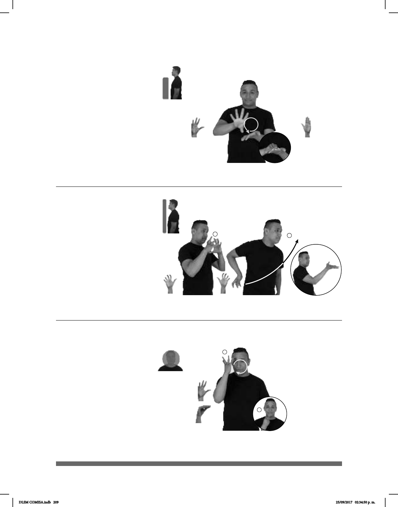

209
1
2
Seña: SB
MD seña que pasa de 5.2 a
O.9, MB B.P-2
MD la palma inicia hacia
afuera y termina hacia abajo. MB palma
hacia arriba.
A la altura del pecho, MD sobre
MB.
La MD se mueve formando
un círculo mientras el pulgar toca los dedos
de la mano.
sust. f. Ceremonia en la que se
celebra.
Seña: SC: I. SS; II. SM
I. y II. 5.18
I. Palmas hacia el centro; II. La
palma inicia hacia afuera y termina hacia arriba.
I. A la altura del pecho; II. De la
cadera al pecho.
II. La mano se mueve formando
un arco.
sust. m. Juego que se practica en
una pista de madera larga y angosta en uno de
cuyos extremos se colocan diez pinos o bolos
en forma triangular y, desde el otro, un jugador
lanza rodando una bola grande y pesada con el
objeto de derribar el mayor número de pinos.
SÍ pro-YO GUSTAR JUGAR BOLICHE
A mí sí me gusta jugar boliche.
(5-G 50)
Seña: SM
Seña que pasa de 5.2 a
O.9
Palma hacia adentro.
A la altura de la cara.
La MD se mueve formando
un círculo y mientras el pulgar toca los
dedos de la mano.
1. adj. Que es agradable a los
sentidos, particularmente a la vista; que
es atractivo o bueno, que tiene encanto. 2.
sust. f. Cualidad que tiene algo o alguien
de producir en quien lo percibe placer,
admiración y gusto.
___muy_
ESO BONITO SÍ pro-YO GUSTAR
Eso es muy bonito, sí me gusta.
1
/
2
(5-G 51)
__________________o.i.g._
yo-INVITAR-a-ti BODA, pro-NOSOTROS-DE-DOS IR
Te invito a una boda, ¿vamos?
Boda (5-G 49)
DLSM COMISA.indb 209 25/09/2017 02:34:50 p. m.